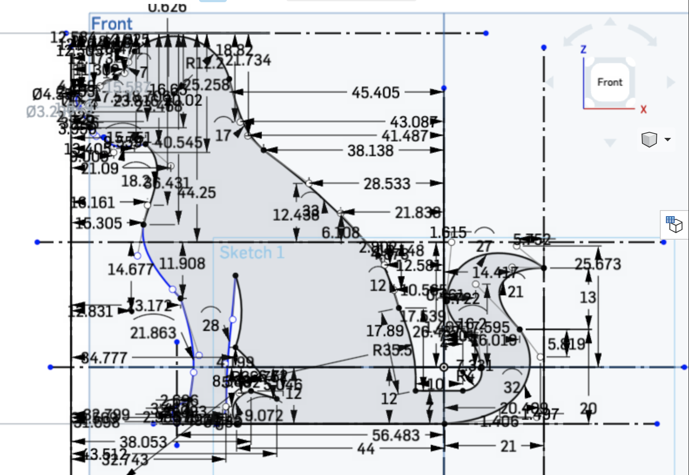
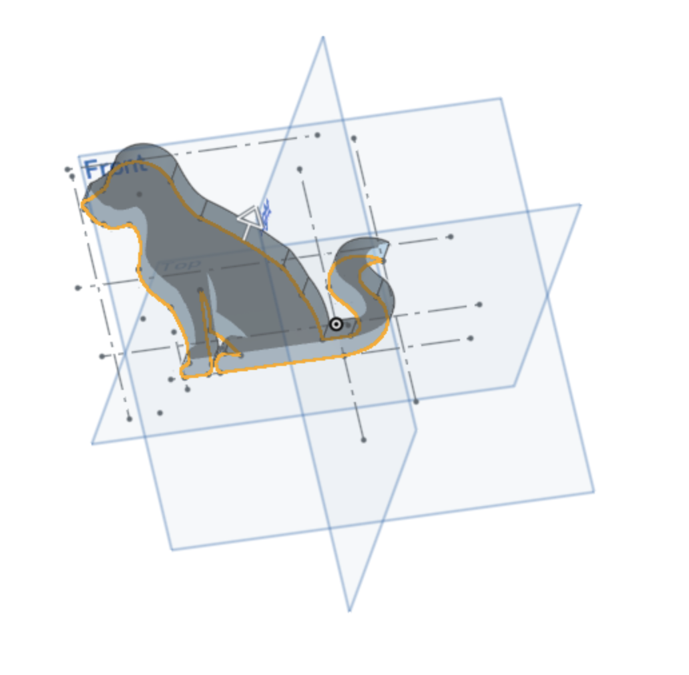
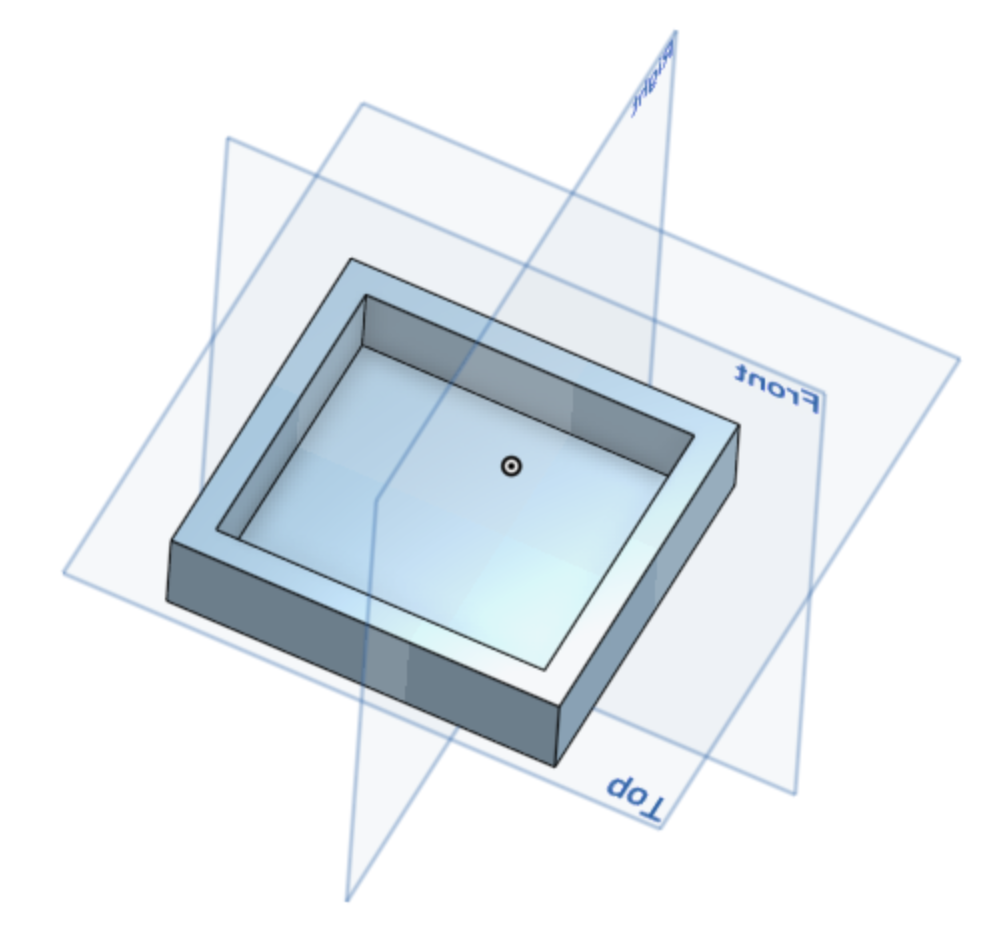
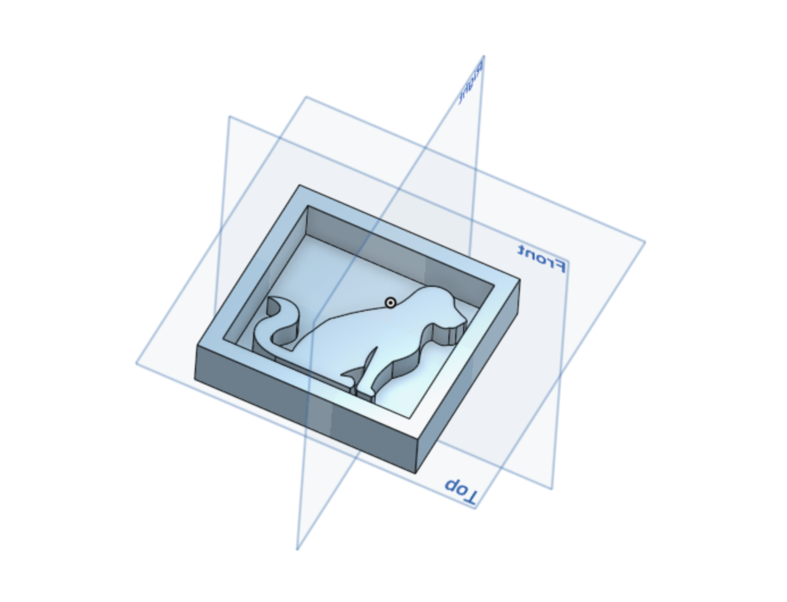
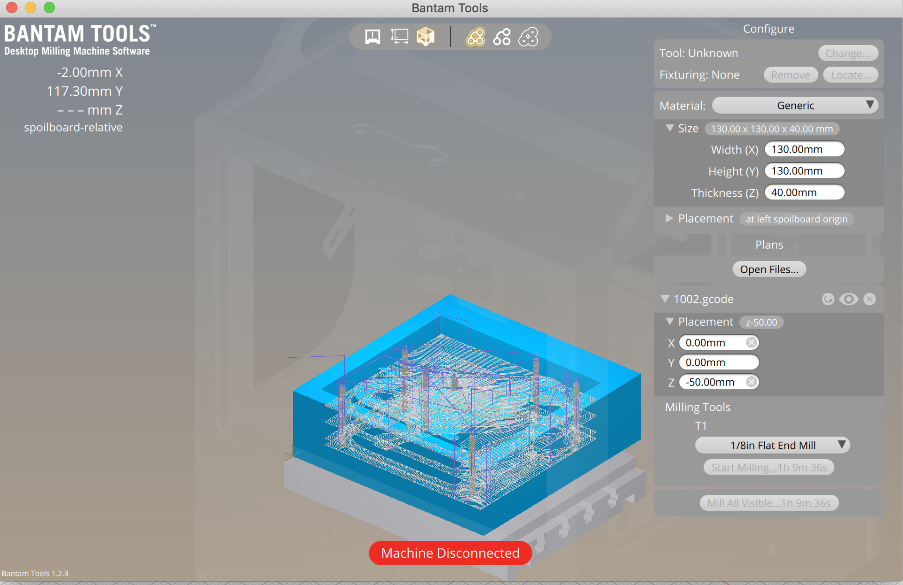
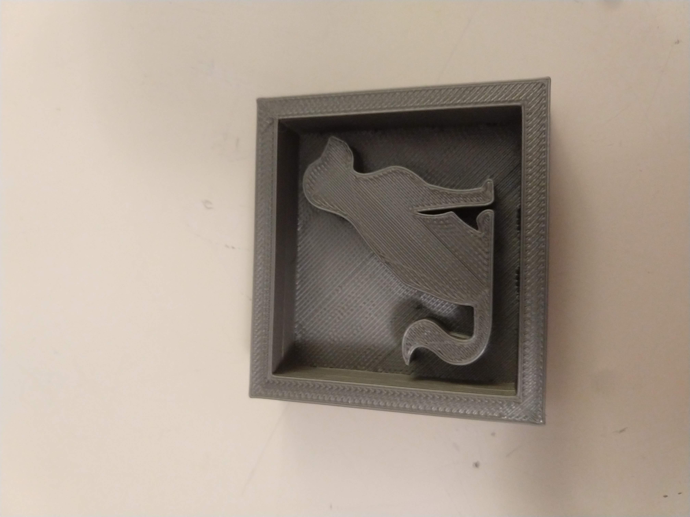
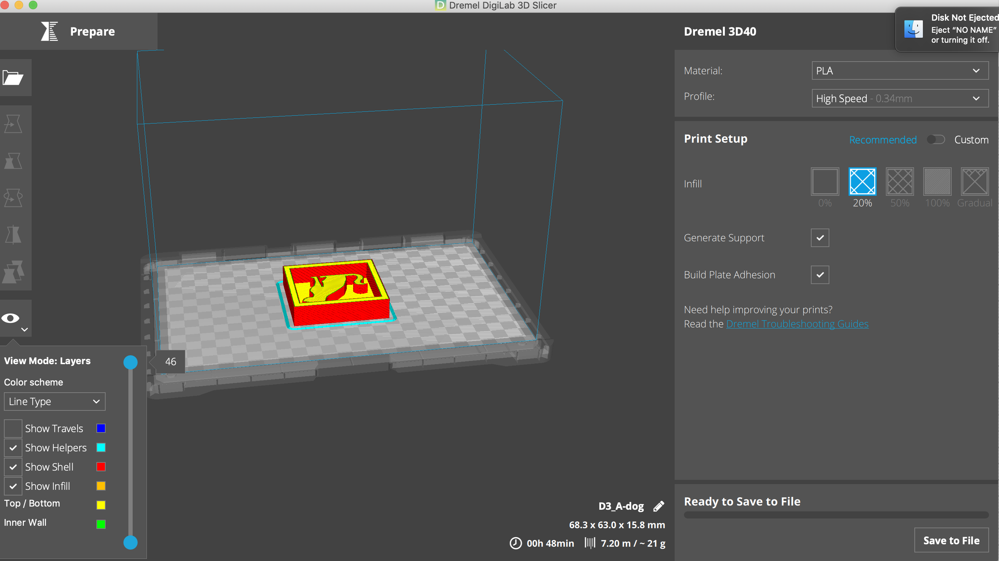
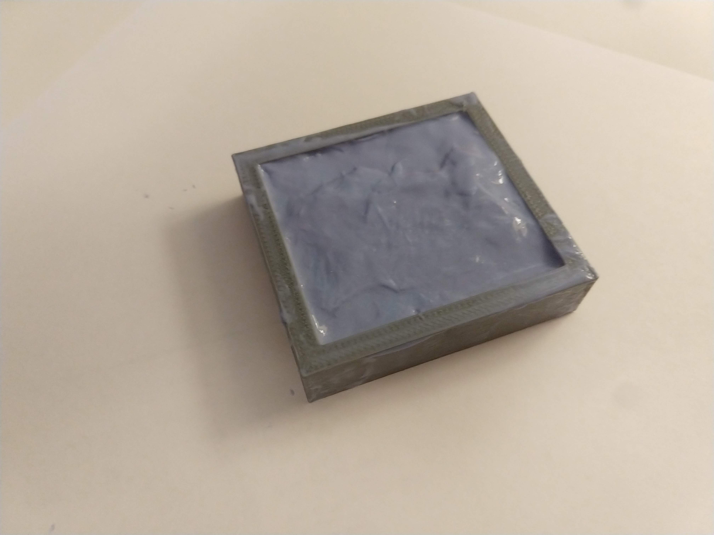
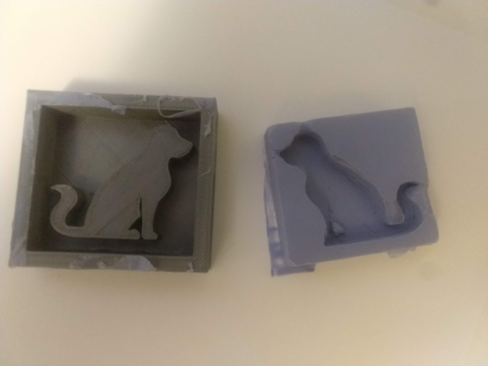
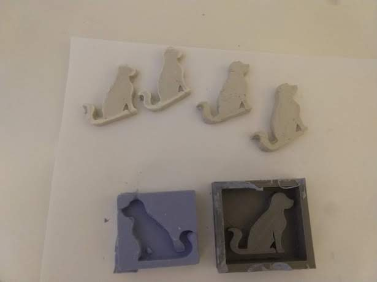

Assignment 6: Molding and casting
Process
I made some plaster cast dogs using a silicon mold. This was fun but was a very sticky and messy project.
Design and execution
I looked at designs to cast and saw a dog-shaped phone holder on Thingverse here. Using this as inspiration, I set to create something similar that’s casted instead of 3D printed.
CAD design
I realized that there were lots of small details in the original design that could be a problem when it comes to creating a mold or a cast. I decided to trace the original design in OnShape to make it more manageable to mold.

Once the basic shape was created, I extruded the shape to give it some depth.

I then created a box that will hold the mold. The box’s dimensions are the same as the machinable wax block.

The dog shape was inserted into the box as shown below. I then binary joined the dog shape with the box so that it is one shape. I also made this shape smaller by 25% so that it will take less time to make on the mill. This was exported as STL file.

Milling attempt
I imported the STL file into Autodesk Fusion 3D. After setting the Manufacturer setup and 3D adaptive cutting settings to match the Bantam 1/8” milling bit, I created a toolpath for the Bantam mill. This was saved as a GCODE file.
I imported this into Bantam Tool in preparation to mill the shape into a machinable wax.

Unfortunately, the milling machines were unavailable at The MILL when I was there.
3D printing
Unfortunately, milling didn’t go according to plan. As a backup plan, I imported the STL file from OnShape into Dremel DigiLab so that I can 3D print the mold.


Creating the silicone mold
With the mold printed, I combined the Oomoo silicone mixture together. This was very sticky and messy. Good thing I used gloves and covered my workspace.

I also applied some Vaseline to help it pop out later according to the Internet. This was then poured into the 3D printed shape to create a mold.

6 hours later, luckily the mold cured and it popped out without too much difficulty.

Casting
I then mixed the plaster together and poured the mixture into the silicone mold.
This was the end result. As a reduced the size of the original shape, instead of a phone holder, it became a card holder.

Learnings
Even though this took by far the longest time and most hands-on work as compared to previous assignments, this went smoothly overall. Having Vaseline as a release agent created a barrier between the OOMOO and the PLA 3D printed plastic.
It’s important to keep in mind that small details like holes and crevasses might not make a good imprint when creating the mold. Even though I tried to account for this when sketching the initial shape, shrinking the shape afterwards didn’t help.
Source files
OnShape project file: here
Autodesk Fusion 3D project file: Assignment6.f3d
Bantam project file: A6-DogMold.btm
STL file: A6-dog.stl
GCode file for printing: A6-D3_PartStudio1-Part1.gcode
Thanks!
Much appreciation to Leo (@LeoSalemann) for his insightful tips on casting. Also thanks for Andrew (@awaer) for his tips designing the mold.
References
Aeromarine Products Inc. Mold Making 101. Retrieved from https://www.aeromarineproducts.com/mold-making-101/
Fezuk, B. (2017 July 30). Cat and Dog Phone Stand. Retrieved from https://www.thingiverse.com/thing:2459052/files